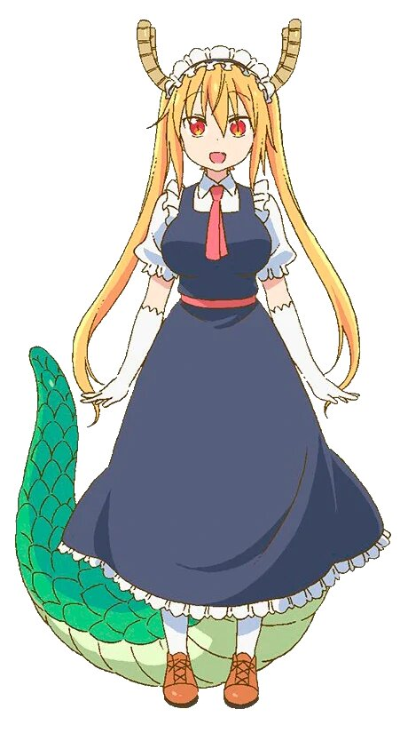
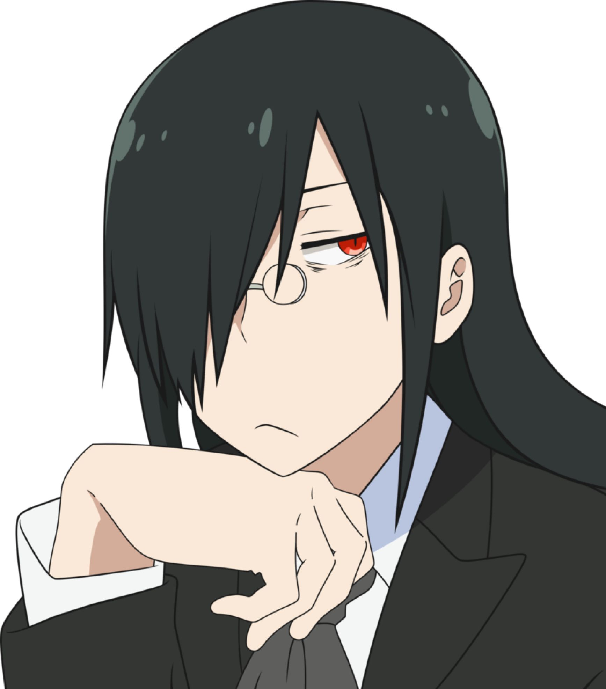

Humanos
Kobayashi
Una programadora normal y trabajadora de oficina que de repente se encuentra viviendo con un dragón después de quitarle una espada divina en una noche de borrachera. Aunque es típicamente estoica y de buen corazón, puede volverse loca cuando está borracha. Tiene una fascinación particular por las sirvientas. Ocasionalmente se la confunde con un chico, debido a su falta de rasgos femeninos, particularmente a su pecho plano y actualmente se desconoce su nombre.

Seiyū: Mutsumi Tamura
Seiyū= Actor/Actriz de voz en japonés
Makoto Takiya
Compañero de trabajo de Kobayashi que Tohru inicialmente cree ser un rival romántico de Kobayashi, pero realmente es solo un chico otaku que le gusta hablar de sirvientas con ella. Kobayashi le ayuda a realizar su presentación en Comiket cada año. Fafnir eventualmente decide vivir con él para permanecer en el mundo humano. Su apariencia seria en el trabajo cambia totalmente a la de un nerd cuando se encuentra jugando con Fafnir o hablando con Kobayashi.
Seiyū: Yūichi Nakamura
Riko Saikawa
Compañera de clase de la escuela primaria de Kanna, que inicialmente es hostil con ella, pero al experimentar su ternura se enamora perdidamente de ella, incluso proponiéndole matrimonio. Enrojece de felicidad cada vez que ella y Kanna hacen contacto físico, aunque también lo suele hacer con Ilulu. A pesar de lo unidas que son, Kanna jamás le ha revelado que es un dragón.
Seiyū: Emiri Katō
Nae Saikawa
Hermana mayor de Riko que finge ser una sirvienta como pasatiempo con el sobrenombre de Georgie, a tal punto de olvidar sus obligaciones e incluso su nombre verdadero. Trabaja en un parque de diversiones.

Seiyū: Yūko Goto
Shōta Magatsuchi
Un mago joven con el que Lucoa empieza a vivir después de que él la convocara sin darse cuenta. Está convencido de que Lucoa es un demonio, y aunque trata de aclarar el malentendido, sus payasadas abiertas hacen poco para ayudar a su caso. Él es un estudiante de quinto año en la escuela que Riko y Kanna asisten, su padre es el director de la compañía de Kobayashi. Además es el único humano al que se le ve usar poderes sobrenaturales.
Seiyū: Kaori Ishihara
Taketo Aida
Es el nieto de la dueña de la tienda de dulces donde Ilulu consigue trabajo. Un adolescente de 16 años estudiante de preparatoria. Al principio se muestra sospechoso sobre el por qué Ilulu decide ir a trabajar a la tienda de dulces, sin embargo, tras verla en su primer día de trabajo termina aceptandola y se vuelven amigos, aunque a menudo se siente provocado por el tamaño del busto de Ilulu (mientras ella tiene sentimientos románticos por él). Al igual que Riko, desconoce que Ilulu es un dragón, además, siente intriga de la relación de Kobayashi con las dragonas.
Seiyū: Hiro Shimono
Dragones
Tohru
Una dragona de la facción del Caos que proviene de otro mundo llamado Reino de los Dragones, o Mundo Dragón, y que es capaz de usar magia para realizar tareas como "bloqueo de percepción", lo que hace que la gente simplemente la pase por alto, repare el daño que pueda haber causado o se transforme entre un dragón y un humano. Después de que su vida es salvada por Kobayashi, se enamora de ella y comienza a vivir en su apartamento como su sirvienta. Por lo general, conserva sus cuernos cuando cambia a forma humana y, ocasionalmente, conserva su cola. Comúnmente se la confunde con una cosplayer debido a su apariencia. Un chiste recurrente implica que intenta alimentar a Kobayashi con pedazos de su cola (que puede regenerar) con su cocina como un signo de afecto y amor. Cuando Kobayashi no está en casa, Tohru trabaja a medio tiempo en un Maid Cafe en donde es la atracción principal. Cumple años el 13 de junio.
Seiyū: Yūki Kuwahara
Kanna Kamui
La amiga de Tohru del reino de los dragones que fue exiliada de su mundo por hacer demasiadas bromas a otros dragones y terminó viviendo con Kobayashi también. Aunque es mucho mayor de lo que parece, es muy joven para los estándares de los dragones, equivalente a una estudiante de primaria en la Escuela Primaria Oborozuka (朧ズカ 小学校 Oborozuka Shōgakkō?), a la que asiste como estudiante de tercer grado con el apellido de Kobayashi. Inicialmente asume que Kobayashi sedujo a Tohru para que se quedara y quería que ella regresara a su mundo original. Ella se apega cada vez más a Kobayashi a medida que avanza la serie, viéndola como una figura materna. La base y el atuendo tribal de Kanna están inspirados en la cultura de los nativos indígenas de Hokkaido que dicen ser de Ushishir. Tiene cuernos parecidos a plumas y una cola delgada que termina en una bombilla, y es capaz de recargar su energía mágica agotada con electricidad. Acepta los sentimientos de Riko además de que le gusta pasar tiempo con ella, incluso con planes de casarse en el futuro. Es capaz de aprender un idioma distinto con solo escucharlo.

Seiyū: Maria Naganawa
Quetzalcoatl (Lucoa)
Una diosa dragón y otra amiga de Tohru, perdió su estatus divino hace siglos después de emborracharse y causar un escándalo, al igual que el Quetzalcóatl del mito original. Aparece en su forma humana como una mujer alta con pechos gigantes y heterocromia en uno de sus ojos. Es muy relajada y fiestera, y adora estar cerca de Shouta, por lo general hundiendolo entre sus pechos.
Seiyū: Minami Takahashi
Fafnir
Otro viejo amigo de Tohru, es un dragón con una gran desconfianza con los humanos que lleva a que pregunte mucho de las acciones de Tohru y de los ideales en sus apariencias anteriores. Él comparte una cierta semejanza con los rasgos de su homónimo, como su comportamiento frío y su mentalidad indiferente. Él aparece como un joven refinado con el pelo negro largo y los ojos rojos en su forma humana. Después de los intentos de Tohru para encontrarle un lugar para quedarse (bajo el nombre de Takeshi Ōyama), Fafnir finalmente llega a vivir con Takiya, obsesionado con los videojuegos y la cultura popular, adoptando el mismo estilo de vida e iniciando una carrera como mangaka.
Seiyū: Daisuke Ono
Elma
Una dragona de agua perteneciente a la facción de la Orden, rival de la facción del Caos de Tohru, que termina trabajando junto a Kobayashi en su oficina después de quedar atrapada en el mundo humano. Ella es tan poderosa como es diligente e impulsada, pero también ingenua, indecisa y fácilmente influenciada por la comida (sobre todo dulces) debido a su bajo ingreso. Su forma humana se distingue por el pelo púrpura, un cuerno, y un tridente; "Elma Jouii" es la identidad que utiliza en el lugar de trabajo de Kobayashi. Es la única dragona que no posee una amistad/afecto con un humano específico, aunque ha demostrado llevarse bien con Kobayashi, cosa que a Tohru no le agrada en lo más mínimo, a pesar de que en el mundo dragón llegaron incluso a viajar juntas.
Seiyū: Yūki Takada
Ilulu
Una dragona de la Facción del Caos que se opone a Tohru debido a su relación con un humano, pero al conocer y vivir con Kobayashi, progresivamente cambia de parecer, logrando tener la infancia feliz que nunca tuvo en su mundo. Debido a que Kobayashi se muestra amable hacía ella, comienza a desarrollar un afecto (ligado más que nada al sueño de tener familia y engendrar hijos) que a menudo causa los celos de Tohru. Como parte de su rutina diaria, consigue un trabajo en una tienda de dulces, ya que al verse obligada a trabajar, al menos quiere estar en un lugar donde puede ver felices a otros niños, asimismo en ese lugar terminó conociendo a Taketo, el nieto de su jefa, con quien termina desarrollando otra amistad y más tarde, desarrolla sentimientos por él.
Seiyū: Tomomi Mineuchi
Padre de Tohru (El emperador de la muerte)
El padre de Tohru, quien desaprueba la relación de Tohru con Kobayashi debido a sus creencias como dragones del Caos y debido a una regla de no interferencia sobre la Tierra. Pero cuando Tohru se niega a irse, no pudiendo forzarla debido a su poder abrumador, termina aceptando su decisión, pero no aprueba a Kobayashi para su hija. En el manga se revela que su verdadero nombre es Damocles, por lo que es posible que al igual que Fafnir y Lucoa, este relacionado al personaje mitológico del mismo nombre.